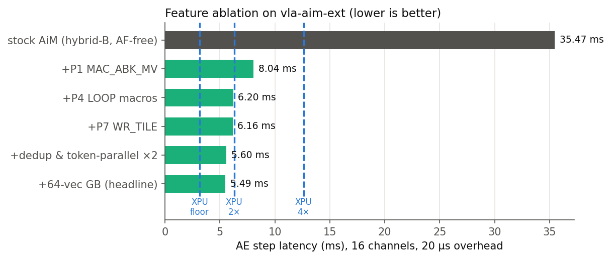
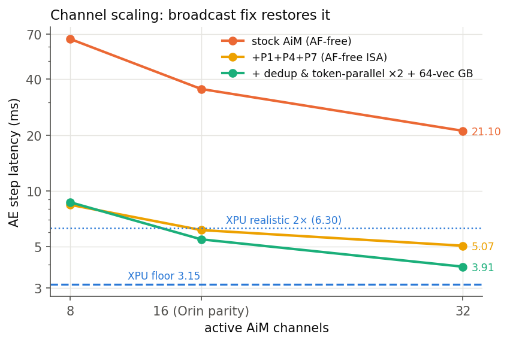

Eight Problems, Six ISA Extensions: 36.7 ms → 4.81 ms per Step
Part II measured why stock LPDDR5-AiM loses on the π0 Action Expert: every in-bank fetch feeds one vector, one accumulator, one register mode. This page turns that breakdown into eight problem statements, implements six ISA/controller extensions on a simulator branch (vla-aim-ext), and measures each: 36.71 → 4.81 ms per step at Orin memory parity (7.6×), and 3.38 ms at 32 channels — within 7% of the XPU’s theoretical bandwidth floor. With stale-KV pipelining, the Action Expert leaves the robot’s critical path entirely.
Overview
Method: every extension is (a) motivated by a measured slice of the Part-II breakdown, (b) specified as encoding + datapath + storage cost, (c) implemented in the cycle-level simulator, (d) validated with unit traces, and (e) ablated cumulatively.
1Eight problems, each with its measured evidence
P1–P6 refine the classic AiM gaps against Part II’s numbers; P7–P8 emerged from our own traces. Reference: stock 16-channel layer = 1.88 ms AiM + 0.16 ms host.
| # | Problem | Measured evidence (per layer, 16 ch) | Fix (this page) | Verdict |
|---|---|---|---|---|
| P1 | GEMV-only compute: one GB vector, one accumulator/bank → no multi-token reuse | 5.10 M MAC16 commands = 42%; 84 k blocking RD_MACs; 100 k WR_BIAS re-inits | MAC_ABK_MV + accumulator file + big GB, RD_MACB | implemented — the big one |
| P2 | No reduction / softmax primitives → every partial exits via blocking reads; softmax round-trips 2.1 MB/layer to host | blocking+drain 13%; softmax host segment + SYNC each layer | RD_MAC_SUM, AF_SCALED, WR_AFLUT presets (exp, rsqrt) | implemented |
| P3 | AiM/normal traffic mutual exclusion blocks concurrent use | structural (enables §8, not layer latency) | per-channel mode-partition CFR | implemented |
| P4 | Host-issued ISRs, no loop control → 56.6 k trace lines/layer, launch overhead per segment | step grows 35.0→40.0 ms over 5→50 µs overhead | LOOP n/ENDLOOP controller macros | implemented |
| P5 | fp16 MACs are area-hungry; INT8/MX would halve weight residency | — (success-rate impact unverifiable without GPU eval) | documented design only | not implemented, honest scope |
| P6 | No lane shuffle for RoPE’s pair rotation | RoPE ≈ 20 µs/layer on host < 1.5% post-P1 | — | rejected with numbers |
| P7 | 1 ISR per 32 B write: activation tile loads are 8.2 k single-column ISRs/layer | loads 4–8%; fixed floor after P1 | WR_TILE descriptor (1 ISR → opsize columns) | implemented |
| P8 | No result write-back path: PIM output cannot feed the next PIM op → gate⊙up forced to host, h tile reloaded (4.1 k writes/layer) | 2.1 MB/layer round trip + largest single load | COPY_MACBK (accumulators → bank row) | implemented |
2P1 — MAC_ABK_MV: teaching one fetch to feed sixteen tokens
The core insight from Part II’s crossover: the XPU wins because its cache lets one weight read serve all 51 tokens. P1 gives AiM the same amortization, in-bank.
Fig. 1 — The P1 datapath change. Cost: ~30 KB more GB SRAM per channel, a 32 B accumulator file per bank, and 16-way time-multiplexed MAC scheduling behind each fetch (occupancy modeled at MAC16 class; a conservative 2× alternative changes the headline by +16%).
Same computation, before and after
# STOCK - 16 output columns x 4 token-groups (Part II pattern, 192 ISRs): COPY_BKGB 64 0xffff 0 100 # weight column -> GB (GB now unusable for tokens) WR_BIAS 0 0xffff | MAC_ABK 64 0xffff 0 | RD_MAC 0 0xffff # token-group 0 [blocks] WR_BIAS 0 0xffff | MAC_ABK 64 0xffff 1 | RD_MAC 0 0xffff # group 1 + row switch # ... x4 groups, x16 columns = 25,639 cycles # EXTENDED - same 16 columns x 51 tokens (32 ISRs): WR_GB 64 0 0xffff ×16 # fill the 16-token tile ONCE (persists!) MAC_ABK_MV 64 0xffff 100 # each bank: 1 fetch feeds 16 dot-products RD_MACB 16 0 0xffff # burst the accumulator file, one blocking point # x16 output rows = 5,388 cycles -- 4.8x on identical math
Two second-order wins fall out: weights are fetched on the 16-bank parallel path again (204.8 GB/s per channel — Strategy A residency, with Strategy B’s reuse), and the WR_BIAS/RD_MAC alternation collapses, taking most of the TMOD churn (16% of the stock layer) with it.
3P2 — softmax without leaving the memory
Stock attention ships 8×51×867 fp32 scores (2.1 MB/layer) to the host for softmax and ships probabilities back. Three small primitives close the loop in-memory:
| New ISR | Datapath addition | Role in softmax(x)i = exᵢ/Σexₖ |
|---|---|---|
| WR_AFLUT opsize | host-programmable LUT tables (16-entry fp16 + interpolation, same hardware as gelu) | loads exp / rsqrt / reciprocal presets |
| AF_SCALED mask | AF unit gains a per-channel scalar multiplier | numerators exᵢ in the accumulators; later x·(1/Σ) rescaling; also finishes RMSNorm (x·rsqrt(σ²)) |
| RD_MAC_SUM GPR mask | 15-adder fp16 tree at the channel PU | Σ over the 16 banks in one 32 B read instead of sixteen |
# attention softmax, stock (per layer): scores -> host -> probs [2.1 MB, 1 host segment + SYNC] RD_MAC ×1632 [each blocking] → SYNC → host softmax → WR_GB probs ×22,440 cols # extended: never leaves the channel MAC_ABK_MV 16 0xffff 4000 # scores into accumulator file AF_SCALED 0xffff # exp preset -> numerators in AF regs RD_MAC_SUM 0 0xffff # denominator partials, one word per channel COPY_MACBK 0xffff 0 6000 # stash exp(s) rows in a bank (P8!) COPY_BKGB 55 0xffff 0 6000 # probs tile back to GB for the context GEMM AF_SCALED 0xffff # x * (1/sum) applied at context output
The softmax host segment and its SYNC disappear from every layer; blocking score reads drop ~4×. Numerics caveat kept honest: fp16 LUT exp + fp16 adder tree is unevaluated against task success rate (no GPU for policy rollouts) — flagged as future work alongside P5.
4P4, P3, P7, P8 — the supporting cast
P4 — LOOP n … ENDLOOP controller macros
Samsung’s HBM-PIM stores micro-kernels in a command register file and replays them with a zero-cycle JUMP; we add the trace-level equivalent: the controller expands a buffered ISR block n times with zero per-iteration host issue. Command issue timing is unchanged by design (the DMA still paces one command per cycle, exactly as a controller draining its macro buffer would) — verified: a 10×-unrolled body and its LOOP form simulate to the identical 6,644 cycles. What changes: a layer shrinks from 56.6 k host ISRs to 8.5 k (6.9×), launch overhead amortizes once per layer instead of once per host segment, and a self-running denoising step (with an Euler MAD at the DMA) becomes plausible.
P3 — per-channel mode partition (CFR 3)
A 32-bit mask CFR marks each channel AiM-mode or conventional-mode, scoping Part II’s mutual exclusion to within a partition. Its value is not layer latency — it is the enabler for §8: streaming next-observation KV into masked channels while the others denoise, and letting the XPU use idle AiM capacity as ordinary memory.
P7 — WR_TILE descriptors
Stock activation loads issue one ISR per 32 B column (8.2 k/layer). WR_TILE opsize GPR mask bank row lets the DMA unroll a whole tile write from one descriptor — the write stream itself already paces at bus rate (unit trace: 286 = 286 cycles), so the win is command-stream compression (64×) and freeing the decode slot the P1-improved layer now notices.
P8 — COPY_MACBK write-back
Stock PIM results can only exit through GPRs toward the host, so gate⊙up ran on the host and the h tile (the layer’s largest load, 4.1 k writes) was re-uploaded for down-proj. COPY_MACBK writes the (post-AF) accumulator file into a bank row (WRCP timing class): gate and up results land in adjacent banks, EWMUL multiplies them in place, and down-proj consumes h without the host ever seeing it.
5Validation
- Unit traces (per feature): MV batch vs stock batch on identical math — 5,388 vs 25,639 cycles; LOOP macro vs unrolled — 6,644 = 6,644 (timing-neutral, as specified); WR_TILE vs 64 single writes — 286 = 286 (stream-bound, ISR count 1 vs 64); P2/P3/P8 smoke trace passes.
- Legacy regression: the upstream all-ISR test and micro-benchmarks produce byte-identical cycle counts on the extended branch (689 / 583 / 337,363) — the extensions change nothing unless used.
- Bandwidth sanity: during MV MAC phases each channel sustains 512 B per column slot = 204.8 GB/s internal — the datapath bound, reached.
- Fairness fix found on the way: the upstream opcode-to-command tables had EOC/SYNC swapped relative to the enum (benign until you append opcodes) — corrected before adding ours.
6Ablation: what each feature buys, and why

| Tier | 8 ch | 16 ch | 32 ch | Why it gets better |
|---|---|---|---|---|
| stock AiM (best mapping) | 68.45 | 36.71 | 21.73 | Part II baseline: fetch-per-token amortization |
| +P1 MAC_ABK_MV | 9.62 | 7.88 | 7.03 | MAC commands ÷4, blocking reads ÷16 per drain, weights on the parallel-bank path: the 42%+13%+16% slices collapse |
| +P2 in-mem softmax | 9.63 | 7.63 | 6.64 | softmax segment + SYNC gone from every layer; 2.1 MB/layer round trip eliminated |
| +P4 LOOP macros | 8.15 | 6.15 | 5.16 | launch overhead once per layer, not per segment; host-ISR stream 6.9× smaller |
| +P7 WR_TILE, +P8 COPY_MACBK | 7.95 | 5.96 | 4.97 | gate⊙up chain stays in banks; h reload (largest single load) disappears |
| +P1 enlarged GB (64 vectors) | 7.58 | 5.58 | 4.59 | all 51 tokens resident at once: activation fills once per op, not per 16-token tile |
| +dedup + token-parallel ×2 (SW) | 7.72 | 4.81 | 3.38 | §7 below |
Step latency in ms, 20 µs launch overhead. An N=4 inference at 16 ch: stock 146.9 ms → extended 19.3 ms; N=10: 367.2 → 48.1 ms (KV-load 74 µs amortizes over the cycle).
7The last bottleneck: activation broadcast — and its sweet spot
After P1…P8, the layer profile flips: WR_GB activation streaming (35%) and prob-tile reads (21%) dominate — and neither scales with channel count, because the same token tile is broadcast serially into every channel’s GB through its 12.8 GB/s port. The bound is physical: you can only (a) send fewer bytes, (b) send different bytes to different channels, or (c) add GB write ports (hardware).
Two software fixes, measured
- Dedup: Q/KV share the same normalized input tile, as do gate/up — fill the GB once per distinct input instead of once per op (−16% of fills). Pure trace-scheduling.
- Token-parallel channel groups: split the 51 tokens (and the 408 attention vectors) across G channel groups, replicating the weights per group — a capacity trade (G × 623 MB out of the 64 GB LPDDR pool) that hardware designers get for free. Each group streams only its share, concurrently on independent channel buses; interleaved ISR emission lets the groups’ controllers overlap despite the single in-order DMA.
| Config | WR_GB ms/layer | prob reads ms/layer | step @16 ch | step @32 ch |
|---|---|---|---|---|
| all features, 64-vec GB | 0.098 | 0.057 | 5.58 | 4.59 |
| + dedup + G=2 groups | 0.041 | 0.029 | 4.81 | 3.38 |
| + dedup + G=4 groups | 0.021 | 0.015 | 6.74 | 4.22 |
RD_MACB, and blocking instructions stall the single in-order DMA globally. Four groups quadruple the serialization points and the stall time triples. Token-parallelism has a sweet spot at G=2; going further needs per-group DMA queues or non-blocking accumulator reads (a P4-class controller extension), multi-port GBs, or activation compression — the concrete hardware agenda this measurement produces.
Net: 4.81 ms at Orin parity (1.31× faster than the realistic XPU), and 3.38 ms at 32 channels — within 7% of the XPU’s theoretical bandwidth floor, from a machine that started 11.6× behind it.
8System view: hiding the Action Expert entirely
With the AE at ~20 ms per N=4 inference, the system-level picture changes qualitatively (Orin timeline: vision 110 ms + VLM 258 ms):
| AE implementation | AE N=4 (ms) | End-to-end (ms) | Control rate | AE share |
|---|---|---|---|---|
| measured unoptimized stack (paper) | 543 | 920 | 1.1 Hz | 59% |
| optimized XPU (2× floor) | 25.2 | 393 | 2.5 Hz | 6.4% |
| stock AiM, 16 ch | 146.9 | 515 | 1.9 Hz | 29% |
| extended AiM, 16 ch, serial | 19.3 | 387 | 2.6 Hz | 5.0% |
| extended AiM + stale-KV overlap | 19.3 (hidden) | 368 | 2.7 Hz | ~0% |
Fig. 3 — Macro-scale concurrency. Serial vs. stale-KV-overlapped control cycle: with the extended-AiM AE at 19 ms against a 258 ms VLM window, the Action Expert vanishes from the critical path.
- Stale-KV pipelining (needs P3): denoise for observation t against the cached KV of observation t−1 while the XPU runs vision+VLM on t. Because AE (19 ms) « VLM (258 ms), the AE hides completely — fresh KV streams into partitioned channels (74 µs against a 258 ms window) and a double-buffered KV region (2×15 MB in 4 GB banks) flips at a step boundary. The same trade V-AEFusion validates on GPUs (their AE is 2× their VLM, so they can hide only half; ours vanishes).
- Dual-use memory: the AiM channels ARE the platform LPDDR. With P3 partitioning the XPU keeps full-bandwidth access for the 95% of the cycle the AE is idle — the difference between “adding a PIM accelerator” and “the memory you already have can denoise.”
- Micro-pipelining: host post-processing of layer ℓ overlaps AiM’s layer ℓ+1 (disjoint data) — a further −10% if wanted.
9Energy, and what a fair baseline looks like
Latency is half the deployment story on a battery-powered robot. Per-command energy follows the CENT power calculator shipped with the simulator (GDDR6-AiM constants, conservative for LPDDR5): array/activate/MAC energies from command counts, DQ at 5.5 pJ/bit, controller and standby power, and an AE-phase GPU power of 20 W [ASSUMPTION; the paper measures 20–40% SM utilization; swept 15–30 W].

- Why stock AiM loses on energy too: 36.7 ms of standby burn (131 mJ) plus per-command overhead traffic. Slowness is itself an energy cost.
- Honest caveat: against the theoretical-floor XPU, extended AiM is ≈1.17× worse on energy — in-DRAM fp16 MACs cost more per op than tensor cores (3.5 pJ/MAC here), and MV still re-fetches weights 4× (16-slot accumulator file). The 64-slot file from §7’s agenda would cut the dominant 83 mJ MAC term ~4×. Combined figure of merit today: 1.31× latency × 1.41× energy ≈ 1.85× energy-delay product — plus the freed XPU.
- What a fair baseline is NOT: more LPDDR. The XPU shares the memory system, and its floor scales perfectly with channels (32 ch ⇒ 1.57 ms) while the AiM curve scales sub-linearly — adding channels helps the baseline more than the design. The legitimate framings are the three-tier baseline (vs measured 543 ms stack ⇒ 28×; vs realistic 2× ⇒ 1.31×; vs theoretical floor ⇒ 0.65× at 16 ch, 0.93× at 32 ch — rung definitions in Part II §7), energy & EDP (above), and iso-platform (same channels, plain vs AiM LPDDR; marginal cost = PIM die area).
- Iso-cost scale-down (Orin NX, 102.4 GB/s = 8 channels): NX AE floor 6.30 ms, realistic 2× 12.61 ms. Our best 8-channel config (7.58 ms, 64-vec GB; token-parallel is counter-productive at 8 ch) is 1.66× faster than the realistic NX baseline and matches AGX-class realistic latency on a ~40%-cost module — with the AE hidden behind the VLM under stale-KV overlap, which an XPU-only NX cannot do.
The deployment-baseline matrix
The platforms robots actually deploy VLAs on are all LPDDR-based — Orin NX (102.4 GB/s; inside shipping Unitree G1 humanoids), AGX Orin (204.8 GB/s; the research workhorse), and Jetson AGX Thor (256-bit LPDDR5X, 273 GB/s; the GR00T-reference humanoid flagship). Cells are our speedup× / energy× at each platform’s own channel budget (ours: 7.58 ms / 133 mJ at 8 ch; 4.81 ms / 137 mJ at 16 ch; host power 15 / 20 / 40 W per platform, Thor’s measured AE ≈ 36 ms/step from the paper’s 246 ms end-to-end — assumptions tagged in the study):
| Baseline tier (ladder defs) | Orin NX (8 ch) | AGX Orin (16 ch) | Thor (16 ch) |
|---|---|---|---|
| measured stack | n/a | 28.3× / 24.3× | 7.5× / 11.9× |
| realistic 4× | 3.33× / 3.55× | 2.62× / 2.53× | 1.96× / 3.34× |
| realistic 2× | 1.66× / 1.93× | 1.31× / 1.41× | 0.98× / 1.82× |
| theoretical floor | 0.83× / 1.12× | 0.65× / 0.86× | 0.49× / 1.06× |
Series & sources
- Part I — Anatomy of a flow-matching VLA: π0 module by module
- Part II — Offloading the Action Expert to stock LPDDR5-AiM (and why it loses 5.8×)
- Part III (this page) — Eight problems, six ISA extensions.
- Part IV — Deployment platforms: where robots actually run VLAs & the speed/energy baseline matrix
All extensions implemented on the vla-aim-ext branch of arkhadem/aim_simulator @ 0f28a07 (exported as patches); ablation from cycle-accurate simulation of generated ISR traces, composed with an analytic Orin host model (tCK = 0.625 ns, documented assumption; ratios are tCK-independent). Honest scope: analytic host, no task-success-rate evaluation (CPU-only study), fp16 LUT numerics unverified, P3 concurrency analyzed rather than dual-master-simulated.